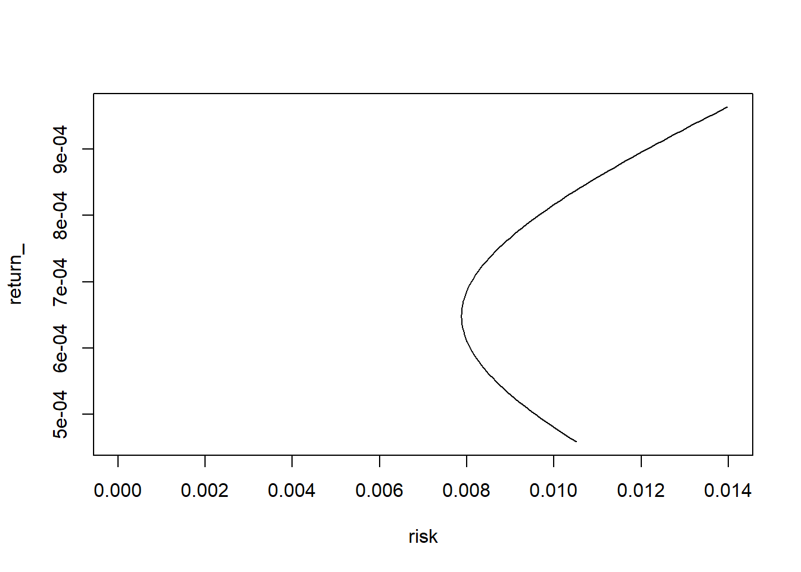
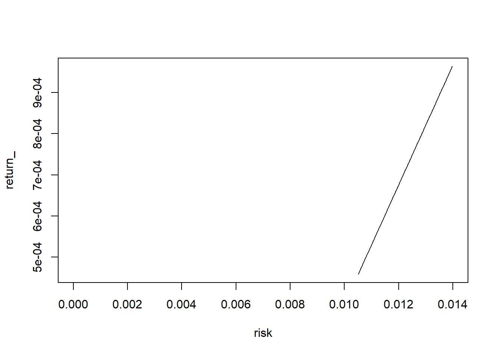
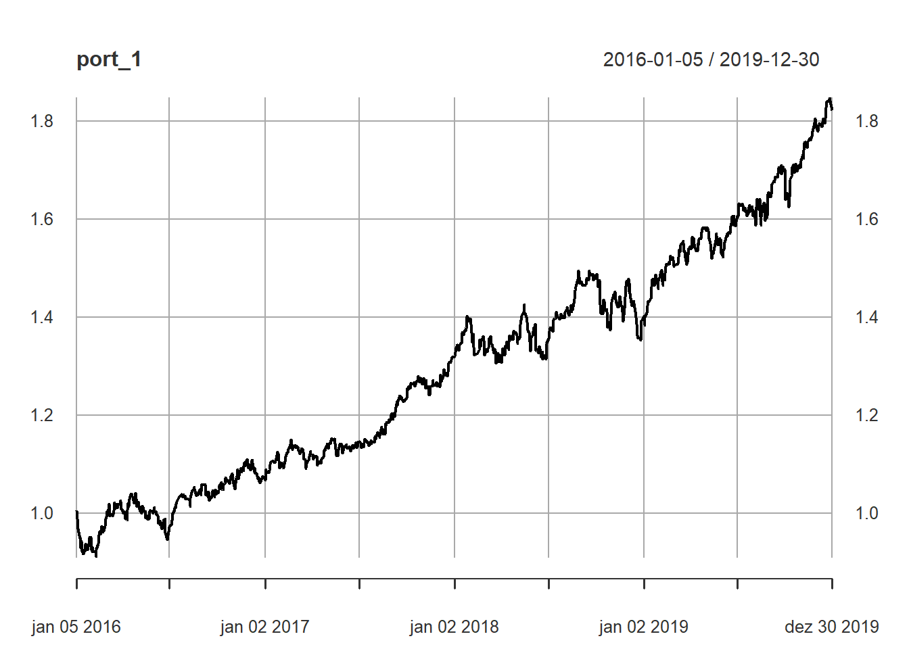

Capítulo 6 Análise de Carteiras
Até agora em nossa jornada já vimos como calcular retornos financeiros, como fazer sua análise estatística e sua análise de risco, onde pudemos analisar diversos ativos e comparar levando em consideração o risco e retorno de cada um. Todos estes tópicos nos trazem a análise de carteira de ativos, onde analisamos o comportamento conjunto dos ativos e descobrimos como podemos utilizá-los conjuntamente para montar uma carteira com um risco menor do que se considerarmos o investimento nos ativos separadamente.
Neste capítulo é necessário um pouco de teoria, mas garanto que já entramos nos códigos para entender como tudo isso se aplica.
6.1 Carteira de ativos
Vamos considerar um exemplo simples onde temos um capital \(W\) para ser investido em dois ativos \(P_1\) e \(P_2\). Dessa maneira, investindo 100% do capital temos
\[\begin{equation} n_1 P_1 + n_2 P_2 = W \tag{6.1} \end{equation}\]
que representa a carteira de ativos onde compramos \(n_1\) quantidades do ativo \(P_1\) e \(n_2\) quantidades de \(P_2\). No ato da compra o valor da carteira é \(W\), ignorando custos de transação e portanto, a fração \(\frac{n_1 P_1}{W}\) é o percentual da carteira alocado no ativo \(P_1\) e \(\frac{n_2 P_2}{W}\) é o percentual referente a \(P_2\).
Podemos demostrar dividindo ambos os lados da Eq.(6.1) pelo capital \(W\). Logo temos:
\[\begin{equation} \begin{array}{rcl} \frac{n_1 P_1 + n_2 P_2}{W} & = & \frac{W}{W} \\ \frac{n_1 P_1}{W} + \frac{n_2 P_2}{W} & = & 1 \\ w_1 + w_2 & = & 1 \\ \end{array} \end{equation}\]
\(w_1 = \frac{n_1 P_1}{W}\) e \(w_2 = \frac{n_2 P_2}{W}\) representam os pesos dos ativos \(P_1\) e \(P_2\) na carteira.
6.1.1 Variação do valor da carteira em função dos retornos dos ativos
Os ativos \(P_1\) e \(P_2\) variam com o tempo, podendo ter variações positivas e negativas. Vamos escrever a variação da carteira \(W\) em termo das varições dos ativos que constituem a carteira.
\[ dW = \frac{\partial W}{\partial P1} dP_1 + \frac{\partial W}{\partial P2} dP_2 \] onde \(\frac{\partial W}{\partial P1}\) e \(\frac{\partial W}{\partial P2}\) são das variações da carteira em função da variação de cada ativo (do cálculo diferencial são as derivadas parciais da carteira \(W \equiv W(P_1, P_2)\)). De acordo com a Eq.(6.1) temos:
\[\begin{equation} \begin{array}{rcl} \frac{\partial W}{\partial P1} & = & n_1 \\ \frac{\partial W}{\partial P2} & = & n_2 \\ \end{array} \end{equation}\]
Assim
\[\begin{equation} \begin{array}{rcl} dW & = & \frac{\partial W}{\partial P1} dP_1 + \frac{\partial W}{\partial P2} dP_2 \\ & = & n_1 dP_1 + n_2 dP_2 \\ & = & n_1 \frac{P_1}{P_1} dP_1 + n_2 \frac{P_2}{P_2} dP_2 \\ & = & n_1 P_1 \frac{dP_1}{P_1} + n_2 P_2 \frac{dP_2}{P_2} \\ & = & w_1 W \frac{dP_1}{P_1} + w_2 W \frac{dP_2}{P_2} \\ \end{array} \end{equation}\]
Dividindo os 2 lados da equação por \(W\) para obter as relações \(\frac{dx}{x} \equiv d\log x\).
\[\begin{equation} \begin{array}{rcl} \frac{dW}{W} & = & w_1 \frac{dP_1}{P_1} + w_2 \frac{dP_2}{P_2} \\ d\log W & = & w_1 d\log P_1 + w_2 d\log P_2 \\ \end{array} \end{equation}\]
O termo \(d\log x\) pode ser expandido para \(\log x_t - \log x_{t-1}\) que é a definição de log-retorno. Dessa maneira podemos escrever \(d\log W \equiv r_W\), \(d\log P_1 \equiv r_1\) e \(d\log P_2 \equiv r_2\), logo:
\[ r_W = w_1 r_1 + w_2 r_2 \]
Temos então que o log-retorno da carteira é dado pela soma dos retornos ponderados pelos pesos dos ativos na carteira.
6.2 Carteira com 2 ativos
Seja uma carteira com 2 ativos, o retorno dessa carteira é dado pela soma dos retornos dos ativos multiplicados pelos seus respectivos pesos na carteira.
\[ r_{c,t} = w_1 r_{1,t} + w_2 r_{2,t} \]
onde os pesos \(w_1\) e \(w_2\) são restritos a:
- \(w_1 + w_2 = 1\): 100% da carteira está alocada nestes 2 ativos
- \(w_1 \ge 0\) e \(w_2 \ge 0\): vamos adimitir apenas posições compradas na carteira
Da primeira restrição temos que
\[ w_2 = 1 - w_1 \]
logo, se fizermos \(w_1 = \alpha\) temos
\[ \begin{array}{rcl} w_1 & = & \alpha \\ w_2 & = & 1 - \alpha \end{array} \]
Consequentemente,
\[ r_{c,t} = \alpha r_{1,t} + (1 - \alpha) r_{2,t} \]
6.2.1 Retorno esperado da carteira
\[ \bar{r}_{c} = \alpha \bar{r}_{1} + (1 - \alpha) \bar{r}_{2} \]
6.2.2 Risco esperado da carteira
A variância da carteira é dada por
\[ \sigma^2_{c} = \alpha^2 \sigma^2_1 + (1-\alpha)^2\sigma^2_2+ 2 \alpha (1 - \alpha) \sigma_1 \sigma_2 \rho_{12} \] onde
- \(\sigma_1\) e \(\sigma_2\) são os desvios padrão dos ativos que compõem a carteira
- \(\rho_{12}\) é a correlação entre os retornos \(r_{1,t}\) e \(r_{2,t}\)
O risco da carteira é a raiz quadrada da variância da carteira \(\sigma_c = \sqrt{\sigma^2_c}\).
Note que as equações para \(\bar{r}_{c}\) e \(\sigma_c\) são função apenas de \(\alpha\), uma vez que escolhidos os ativos, as variáveis \(\bar{r}_1\), \(\bar{r}_2\), \(\sigma_1\), \(\sigma_2\) e \(\rho_{12}\) são obtidas dos próprios ativos. Dessa maneira, podemos simular o risco e retorno esperados da carteira para todos os valores de \(\alpha\) no intervalo \([0,1]\).
symbols <- c("BOVA11.SA", "SPXI11.SA")
prices <- getSymbols(symbols, from = "2016-01-01",
to = "2019-12-31",
auto.assign = TRUE) %>%
map(~Ad(get(.))) %>%
reduce(merge) %>%
`colnames<-`(symbols)r_i <- colMeans(rets)
sigma_i <- apply(rets, 2, sd)
rho_ij <- cor(rets[,1], rets[,2]) %>% as.numeric()r_c <- function(alpha, R) alpha*R[1] + (1 - alpha)*R[2]
sigma_c <- function(alpha, SIGMA, RHO) {
r <- alpha * alpha * SIGMA[1] * SIGMA[1] +
(1 - alpha) * (1 - alpha) * SIGMA[2] * SIGMA[2] +
2 * alpha * (1 - alpha) * SIGMA[1] * SIGMA[2] * RHO
sqrt(r)
}alpha <- seq(0, 1, 0.01)
risk <- sigma_c(alpha, sigma_i, rho_ij)
return_ <- r_c(alpha, r_i)
plot(risk, return_, type = "l", xlim = c(0.0, 0.014))
alpha <- seq(0, 1, 0.01)
risk <- sigma_c(alpha, sigma_i, 1)
return_ <- r_c(alpha, r_i)
plot(risk, return_, type = "l", xlim = c(0.0, 0.014))
alpha <- seq(0, 1, 0.01)
risk <- sigma_c(alpha, sigma_i, -1)
return_ <- r_c(alpha, r_i)
plot(risk, return_, type = "l", xlim = c(0.0, 0.014))
alpha <- seq(0, 1, 0.01)
risk <- sigma_c(alpha, sigma_i, rho_ij)
return_ <- r_c(alpha, r_i)
plot(risk, return_, type = "l", xlim = c(0.0, 0.014))
risk <- sigma_c(alpha, sigma_i, 1)
return_ <- r_c(alpha, r_i)
lines(risk, return_, type = "l", xlim = c(0.0, 0.014), col = "blue")
risk <- sigma_c(alpha, sigma_i, -1)
return_ <- r_c(alpha, r_i)
lines(risk, return_, type = "l", xlim = c(0.0, 0.014), col = "cyan")
6.3 Montando uma carteira
weights_c <- c(BOVA11.SA = min_var_weight, SPXI11.SA = 1 - min_var_weight)
port_1 <- Return.portfolio(rets, weights_c, wealth.index = TRUE)
plot(port_1)
6.3.1 O que acontece com os pesos dos ativos ao longo do tempo?
Começamos a carteira com um \(\alpha\) igual a 0.38. Logo temos 0.38 investidos em BOVA11 e 0.62 investidos em SPXI11. De acordo com a Eq.(6.1) as quantidades de cada ativo são atribuídos no instante da montagem da carteira, obedescendo pesos definidos. O que acontece se um ativo dobrar de valor e o outro ficar parado? Naturalmente os pesos dos ativos são alterados, pois as quantidades de cada ativo permanecem fixas. Logo, é necessário rebalancear a carteira para evitar que um ativo fique muito dominante na carteira, reduzindo a diversificação.
Há diversas maneiras de fazer o rebalanceamento da carteira, uma forma bastante simples, embora não tanto eficaz, é fazer com que os ativos voltem a ponderação definida no instante inicial da carteira.
Uma abordagem muito comum para investidores pessoa física é distribuir os ativos na carteira com pesos iguais e frequentemente fazer o rebalanceamento da carteira para enquadrar os pesos nesta regra.
6.4 Rebalanceamento da carteira
weights_c <- c(BOVA11.SA = min_var_weight, SPXI11.SA = 1 - min_var_weight)
port_2 <- Return.portfolio(rets, weights_c, rebalance_on = "months", wealth.index = TRUE)
ports <- merge(port_1, port_2) %>%
`colnames<-`(c("Sem rebalanceamento", "Com rebalanceamento"))
plot(ports, legend.loc = "topleft")